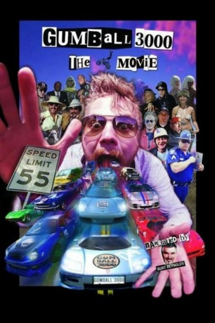

#11856 Jackass: Gumball 3000 Rally Special *OmU*
 
 IMDB-Wertung: 6.5 / 10
IMDB-Wertung: 6.5 / 10  Metascore: 0
Metascore: 0 
Das Gumball 3000 ist ein seit 1999 jährlich stattfindendes und in einigen der besuchten Länder als illegal eingestuftes Autorennen auf öffentlichen Straßen (Streetracing). An der dritten Rally, welche im April 2001 stattfand, nahmen 106 Autos teil, unter anderem mit Johnny Knoxville, Steve-O und Chris Pontius von Jackass. Sie fuhren einen 1989 Jaguar XJ6. Teile der Rally wurden als einstündige Jackass Folge auf MTV ausgestrahlt.
Englisch mit deutschen Untertiteln
Jahr: 2005
Dauer: 42 Minuten
FSK:
Land: USA Studio: Paramount Home EntertainmentTonspuren:
Untertitel:
Auflösung: SD (640x480) Größe: 696 MB
Genre: Komödie, Dokumentation
Regisseur: Jeff Tremaine
Drehbuch:
Soundtrack:
Darsteller:
- Maximillion Cooper als Himself
 Johnny Knoxville als Himself
Johnny Knoxville als Himself Chris Pontius als Himself
Chris Pontius als Himself Steve-O als Himself
Steve-O als Himself- Jeff Tremaine als Himself
- Ruby Wax als Herself
- Dimitry Elyashkevich als Himself
- Greg Iguchi als Himself
Datei: X:\FSK18-Collections\Jackass\Jackass Gumball 3000 Rally Special OmU (2005, FSK, 640x480).avi seit 02.10.2019
Festplatte: FSK18
 Es gibt insgesamt 8 Filme in der Gruppe 'FSK18-Collections\Jackass'
Es gibt insgesamt 8 Filme in der Gruppe 'FSK18-Collections\Jackass'